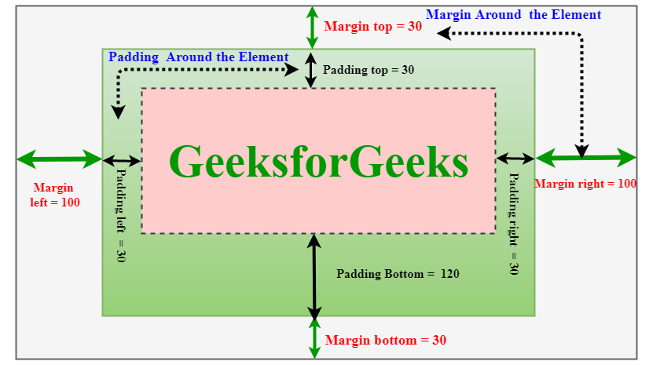

What is the difference between margin, border and padding
The main difference between margin and padding is that margin helps to create space around the element outside the border,
while padding helps to create space around the element inside the border.
